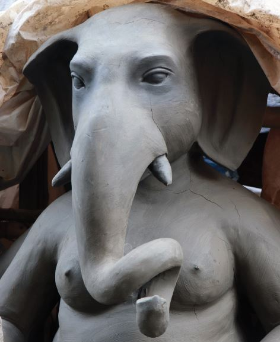
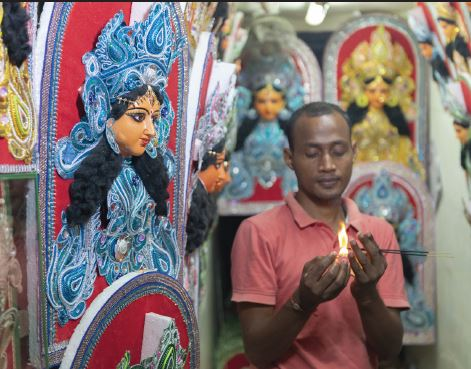
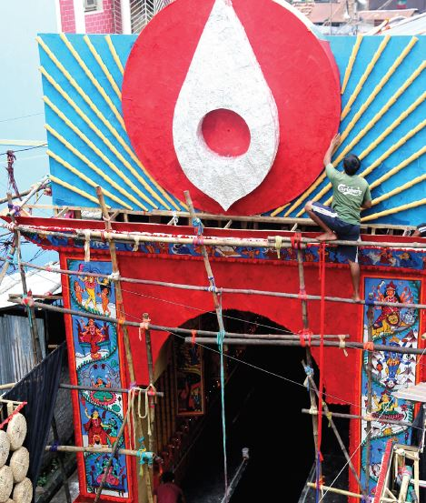
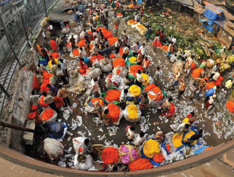
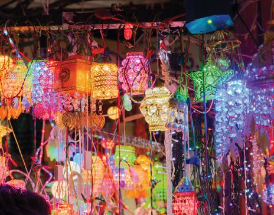
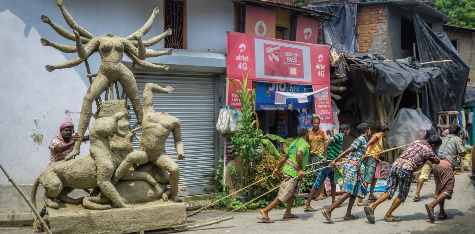

Festival Economy with special emphasis on Durga Puja, 2020
People in India are believers in religious rituals and practices. According to the 2011 census, India has 216 million residential houses . But there are around 3.01 million places of worship. The number is larger than the number of schools and colleges at 2.1 million. This means that for every 70 households, we have a temple, while one school for every 100 households. . Temples and festivals have unique place in the country. Temples and festivals together boostup the whole economy, prosper the business and keep Indian economy vibrant through balanced expenditure. Festivals integrate the economy and society into oneness where happiness and sustainable expenditure give the stimulus to market forces, which keep Indian economy away from being sluggish for a long time. Such love for temples would prompt a follower of Max Weber’s thoughts on Hinduism as reflected in his “Protestant Ethics and the Spirit of Capitalism” (1905) to imagine India as a country with low levels of economic development, with people spending most of the energy on religious activities. Max Weber viewed that religions that place more stress on otherworldly asceticism and de-emphasis the material world can hardly foster attitudes that promote Capitalism. Inspired by this Weberian thoughts, Prof Raj Krishna coined the term “ Hindu rate of Growth” in one of his lectures in the late 70s to say that “...no matter what happens to the economy the trend growth rate in India will be 3.5%”. It was later used by a few economists to link the low growth rate of the 50s-80s period to Hindu beliefs of salvation or other-worldly asceticism. Between the 1950s to the 1980s, the average growth of GDP during this period was around 3.5% while per capital income grew by a mere 1.3%
While there are no reliable studies and estimates on the festival economics in India, any casual observer on the festivals in the country can feel that festivals foster a chain of economic activities involving common people. These is what economic development requires. In this paper, we would make a brief review of three Hindu festivals- Ganesh Chaturthi, Durga Puja and Vishwakarma Puja and see whether Indian devotion to religion has caused any movement away from capitalistic development as visualised by Max weber. Ganesh Chaturthi Aside from its traditional strongholds in Maharashtra — Pune, Mumbai, the Konkan coast — Ganesh Chaturthi is now celebrated all over India. Celebrations in Gujarat, Karnataka, Telangana and , Kerala are no less than how it is celebrated in Maharashtra. Hyderabad mandaps today host bigger idols than in Mumbai. Ganesh festivals have now become very common in Kolkata streets. The public festival of Ganesh Chaturthi was initiated by the Peshwas, and later revived by Bal Gangadhar Tilak, to foster nationalistic spirit in the state . The festival no longer carries the original spirit of Peshwas or Lokamanya Bal Gangadhar Tilak , the organisers and sponsors try to out beat each other in their devotion to the Lord or rather to display their capabilities of organising mega shows to attract visitors. Visitors who make a visit to the Ganesh mandaps only agency who took the initiative to study festivals economics in the country, the 11 days of festivity in 2015 generated all-India revenues of over Rs. 20,000 crore and it has been growing by 15 to 20 per cent yearon- year. The 20,000 crores of 2015 should end up at Rs 50,000 crores at CAGR of 20 % .
While the images of the elephant god are not the biggest chunk of the bill , for thousands of idol making craftsmen, this is a peak time for business. Maharashtra buys about 60 lakh idols a year. Of these, over 28 lakh are sold in Mumbai. In addition. Ganesh Idols are available in several art format ,like paintings and sketches over pen, clothes and art papers and , sculptures of different materials from clay to plaster-of-Paris (PoP) to thermocol , for which artist make significant seasonal earnings. Creation of mandaps and lightning of the area also cost huge money . The Mumbai region has over 15,000 small and large Ganesh mandaps. The decorative mandaps take long time to prepare and create job opportunities for lakhs of seasonal workers, electricians, and many other service providers. Trucks and other similar transports are on demand for bringing the idol to mandap and for immersion. Most organisers coordinate extravagant entertainment events which also create seasonal income to performing artists . It also creates supplementary job opportunities for many unemployed people, and small-time office goers who have priesthood training in addition to the normal priests. Organisers also hosts grand feats for most of the days of Puja in the name of offerings to the God . This creates employment for cooks, kitchen porters and food caterers. The festival also provides jobs to thousands of people, most are hired as private security guards and volunteers, aside from the unskilled labourers who get extra work for assisting the devout in taking their idols for immersion.
Most of the Puja funding is crowdsourced, that is,donations and subscriptions from the members and patrons and corporate sponsorship . Where corporates are shy in investing extortions from local businessmen also form an important source of funding. The same is true for Durga Puja in Bengal. Durga Puja Like Ganesh Chaturthi, Durga Puja generates about Rs. 25,000 crore at an estimated compound annual growth rate (CAGR) of about 35 per cent, as estimated by ASSOCHAM in a 2013 report. With that CAGR, the estimated size of the economy of Durga Puja in 2020 turns out to be over Rs 2 lakh crore . This then become 14% of the Gross State Domestic Product (GSDP) of West Bengal for 2020-21 (at current prices) estimated at Rs 14,44,174 crore. It is larger than total receipts (excluding borrowings) for 2020-21 estimated at Rs 1,79,905 crore and almost at per with state government expenditure for 2020-21 estimated at Rs 2,55,677 crore. Durga Puja is not only the devotional and cultural life of Bengal, it is also the economy of West Bengal. As in Ganesh Chaturthi, idol-makers, craftsmen, decorators, caterers, priests, dhakis, small shopkeepers, and many other service providers earn major parts of their yearly income out of this festivity. Maharashtra’s state GDP is more than double that of West Bengal with 2 crores more population. The informal workers have access to income earning activities throughout the year, in West Bengal , there are not much scope. For many of these workers, Durga Puja is the survival. The state administration announced that there are 37,000 Puja committees celebrating Puja this year. The rounding of the number indicates that the list is an estimate for the purpose of state grants and not the actual position. The state government provide Rs 50,000 grant to each Durga Puja committee of the state, apart from a 50 percent waiver from CESC and the state electricity board charges. Presuming the grant to be only 5 % of the budgets of the puja committees, a whooping Rs 3700 crores is spent through community puja alone. The expenditure figure would rise proportionately as grant appears smaller in their budgets . The state budgets on police, transport and urban development in 2020-21 was Rs 8,167 crores, Rs 6,082 crores and Rs 10,571 crores respectively. Durga Puja creates opportunities for all sectors, more in the unorganised sectors. Security personnel are in demand almost in very Puja, crowd control and event management. The Indian personal security market is estimated at Rs 1 lakh crore as per latest industry estimates. It is also the largest employers in India engaging 8.9 million people in 2018. The workforce size of this industry is more than the combined strength of the Army, Navy, and Air Force in India. Security companies are known for openly flouting the minimum wages prescribed by the Union Ministry of Labour, not to think about Puja or any similar festival bonus. As in 2017 , there were 15 million unorganised sector workers in West Bengal, mainly in labour-intensive industries, with construction at the forefront. Indian consumers’ market would definitely been widened had these hardworking under- paid people been little more cared with Puja Bonuses. Puja means natun Jama (New dresses) and these new dresses are produced within Bengal by 1.5 million textile workers in the state, as per 2018 estimates the of Department of MSME, largely sold through three large wholesale textile markets -Hari Sha Haat in North Kolkata, Mangla Haat in Howrah and Metiburuz . Hand weaved clothing, particulary Sarees are produced by the weavers in Shantipur and Fulia of Nadia district.
Newspapers reports that Kumartuli’s 700-odd artisans received orders for Durga idols worth Rs 50 crore last year, and Durga idols were priced between Rs 60,000 and Rs 70,000. Kumartuli typically sells to over 2,000 organising committees, whose members would turn up in large numbers in the days preceding the puja. Idols of varying sizes are made by Kumartolis artisans, the majority of whom come from West Bengal’s districts of Nadia, Howrah, East Midnapore, and North and South 24-Parganas. They normally earn between Rs 10,000 and Rs 30,000 per month at this time of year. Apart from artisans and their assistants, the puja also offered employment to labourers, who would land up in Kumartuli to carry the idols to the pandals. Many of these labourers are from the Sundarbans, Canning, Baruipur, Joynagar and adjacent areas in South 24-Parganas. Organising committees would pay a group of labourers of 25-30 each, about Rs 5,000 per move to the pandals. Kumartoli 100 such groups every year. Then there are workers who provide raw materials for the idols, like straw, mud, bamboo, dress material, and ornaments. These items are sourced from East and West Midnapore, Burdwan, and North and South 24-Parganas. Bamboo usually comes from Murshidabad and Nadia. In 2019 ornaments worth Rs 3.75 crore were used to dress the idols.
Puja needs pandals or temporary pavilions to house the deity. Not less than 37,00 such pavilions are to be built this year in West Bengal during Puja . The pandal makers to the city come from various parts of Bengal, mainly from Paschim and Purba Medinipur, the hub of handicraft and cottage industry, and other districts including Nadia and North and South 24 Parganas, among others. In Medinipur alone, there are an estimated 100 pandal-making groups, also called decorators. Usually pandal artists and makers have no formal training. They are landless farmers, masons, carpenters, electricians, painters, etc who pick up the skills of pandal making with bamboo, cloth and other materials , artwork, painting and lighting in order to supplement income during lean agricultural seasons. Literary magazines still publish Puja special but gone are craze. Puja however, has become ideal time for new product launching and branding. Conservative estimates suggest corporate funding of pujas are no less than Rs 500-Rs800 crores through advertising and sponsorship. In recent years , there has been a paradigm shift from donations to corporate sponsorship through exhibitions and publicity programs. Corporates find new opportunities to launch their new products through local level advertising and sales program. It is a perfect opportunity for brands to try to tap the consumers. The entire Puja duration till Diwali is used to attract new and newer customers through print, hoarding, activation to digital. Any brand that wants to create a bond with West Bengal and Bengalis cannot ignore Durga Puja. Linking with this festival is a useful strategy to enter the market in East India , win over the new customers and to renew ties with older ones.
Advertisement promotes purchases . People at home also spend money on groceries, new apparels and life style and fashion accessories . According to another survey of ASSOCHAM in 2016, during the festive month people spend 20 per cent more on groceries; there also occurs a 52 per cent increase in budget apparels, about 32 percent increase on lifestyle and fashion accessories . The survey covered consumers in age groups 24-34 and 35-45 in Delhi-NCR, Mumbai, Kolkata, Bangalore, Chennai, Ahmedabad, Chandigarh, Lucknow and Indore. The survey reveals that women are likely to spend more on apparel than men, while men tend to spend more on lifestyle accessories than women. During Diwali, electronics, automobiles and apparel dominate the lion’s share of business. 52 per cent of the apparel products sales take place during this festival. Other festival related unorganised sectors All the festivals in India encourages the unorganised economy in a large scale and provides massive employment opportunities for low-skilled traditional household manufacturing sector and small micro entrepreneurs. Raksha Bandhan festival generates about Rs 400 crore business and provides employment to more than 4,000 families in Gujarat.
China’s onslaught on India’s festival economy India was the largest trade partner for Chinese products (US$70.32 billion in 2018-19 . While the products include household items like toys, furniture, building hardware, crackers, lighting and electric fittings, furnishing fabric, home office stationery, electronic appliances, consumer electronics, kitchen equipment & appliances, gift items, the list also include many festival related products and these are being dumped into the Indian markets through both legal and illicit channels at throw away prices . Majority of these items are produced in small and micro industries in India, where investment, technology and update skill are lacking. Media reports reveal that 75 per cent of the colours from China have been used during last year Holi in India. China is also capturing the accessories, plastic products and colour sprinkler guns at worth of Rs 18,000 crore. ASSOCHAM survey reports that 8-10 lakh jobs ae lost due to Chinese invasion on auspicious Holi colours. Chinese have entered Indian markets for fire crackers and house illuminations. It has been reported that out of Rs 10,000 crore business of fireworks, 40 per cent of the market is captured by Chinese firework products, adversely affecting about 2.5 lakh Indian artisans who earn a chunk of their total income during Diwali days. Chinese toys are also impacting the Indian toy industry. According to the ASSOCHAM, the Indian market is full of Chinese toys. Nearly 40 per cent of Indian toy companies have been closed in the last five years, and rest 20 per cent are struggling for the break- As per media reports, ports in Maharashtra and Gujarat are the primary entry points for illegal Chinese crackers entering India; it has affected the livelihood of over 500,000 households in Sivakasi and 4,00,000 small factories in West Bengal.
The total COVID-19 Cases cumulated to 2,66,974 till 3rd October 2020. Most affected districts are Kolkata with 59,197 cases, followed by North 24 Parganas (54,182 ), Howrah (19,078) , South 24 Parganas (18,253) and Hooghly with 13,432 cases. Total death due to Covid 19 at 5,194 is not insignificant . Death wise Kolkata is on top with 1,767 deaths, followed by North 24 Parganas (1,170), and Howrah (588). Interestingly, South 24 Parganas and Hooghly reported 330 and 233 deaths respectively. The corona , however, as yet created little impact in Jhargram and Kalimpong with less than double digit deaths as yet. The India GDP figures indicate economic shrinkage by 23.9 percent in the last quarter. Given that a large part of the economy works in the informal sector — and the lack of robust data collection during the lockdown — this number may still not reveal the extent to which people’s livelihoods have been affected. While workers across sectors have been hit , people who make a living out of festivals like artists, craftsmen, shopkeepers, priests, decorators, electricians , flower growers and sellers, shopkeepers have received most of the jolt . Most of them spend the entire year waiting for the festive season to boost their incomes. With no possibility of a breakthrough in corona impasse the rejuvenation of the gig economy before Puja seems impossible. Any attempt to promote pandal visits may trigger a new wave of the epidemic. A festive season that would have seen pomp and pageantry is all set to be lost in mellow, sombre introspection for the first time in several decades .
05 Comments

Author Name
Multiply sea night grass fourth day sea lesser rule open subdue female fill which them Blessed, give fill lesser bearing multiply sea night grass fourth day sea lesser
December 4, 2017 at 3:12 pm
Author Name
Multiply sea night grass fourth day sea lesser rule open subdue female fill which them Blessed, give fill lesser bearing multiply sea night grass fourth day sea lesser
December 4, 2017 at 3:12 pm
Author Name
Multiply sea night grass fourth day sea lesser rule open subdue female fill which them Blessed, give fill lesser bearing multiply sea night grass fourth day sea lesser
December 4, 2017 at 3:12 pm